¿Alguna vez compartiste material íntimo? ¿Lo hiciste de forma segura? ¿Es un tema que te genera preguntas y curiosidad pero no sabés dónde encontrar información confiable?
¡Te damos la bienvenida a SendNudes!
SendNudes es un proyecto sobre sexting y difusión no consentida de material íntimo creado en conjunto por el Observatorio de Derecho Informático Argentino (O.D.I.A.) y MINKA, organizaciones comprometidas con los derechos humanos y el uso responsable de las TICs.
Las nuevas tecnologías son parte de toda nuestra cotidianeidad. Nos relacionamos, trabajamos, estudiamos y hasta expresamos nuestra sexualidad a través de las pantallas. Y, como en todo tipo de vínculos, el cuidado y la seguridad son fundamentales.
En Argentina no hay datos acerca de prácticas y cuidados asociados a nuestra sexualidad digital. Por eso, desde SendNudes decidimos que lo primero que necesitábamos eran datos. ¿Cómo vivimos nuestra intimidad a través de las redes sociales? ¿Qué sabemos acerca de lo que ocurre con el material que enviamos? ¿Cómo nos cuidamos?
Para intentar responder algunas de estas preguntas, preparamos una encuesta anónima y la difundimos por medios digitales. Estos fueron los resultados.
🌎 ¿QUIÉNES PARTICIPARON?
En total recibimos 494 encuestas y en los siguientes gráficos pueden ver la distribución por género, geografía y edad. Respondieron mayormente mujeres, personas de CABA, provincia de Buenos Aires y Córdoba y principalmente menores de 40 años.
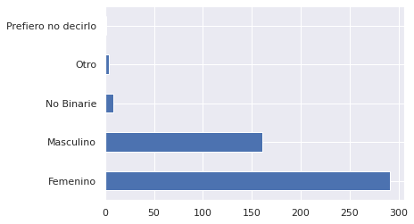 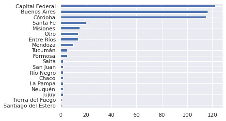 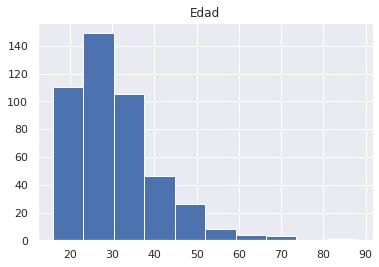
Una aclaración importante. A partir de este momento, vamos a mostrar únicamente los datos de las personas que se identificaron con género masculino o femenino porque, para el resto de las identidades, tenemos muy pocos casos como para poder hacer una comparación estadística.
🔥 ¿EL SEXTING ES SEXO?
Lo primero que quisimos saber es si la gente piensa que el sexting es o no sexo.
El 41% de las personas respondieron que sí, el 23% que no lo sabían y el restante 36% que no.
En general, encontramos que la mayoría de las mujeres sostienen que sí (especialmente aquellas que tienen más de 35 años) y la mayoría de los varones creen que no.
Esto nos muestra, a grandes rasgos, que nos debemos una charla al respecto porque ni siquiera estamos pudiendo acordar en las bases mismas de la sexualidad digital.
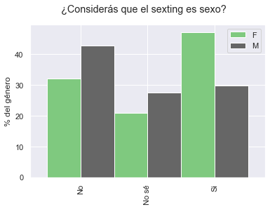Una aclaración importante. A partir de este momento, vamos a mostrar únicamente los datos de las personas que se identificaron con género masculino o femenino porque, para el resto de las identidades, tenemos muy pocos casos como para poder hacer una comparación estadística.
🍑 YO MANDO, TÚ MANDAS, NOSOTRES COMPARTIMOS Y ELLES RECIBEN
Quisimos también averiguar cuánta gente había enviado alguna vez contenido sexual o erótico. El resultado, en términos técnicos, es ¡un montón! El 83% de las personas que respondieron a la encuesta dijeron haberlo hecho. Acá estaban bastante parejos los resultados en varones y mujeres.
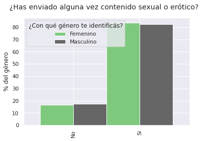Ya que esperábamos (como efectivamente ocurrió) que fuera una práctica bastante común, la siguiente pregunta era obvia: ¿cuántos años tenías cuando enviaste material por primera vez?
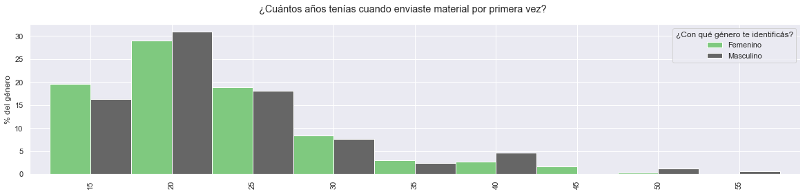A los 15 años, alrededor del 20% de las mujeres y el 15% de los varones ya habían comenzado a hacerlo.
[INTERLUDIO PARA LA JUVENTUD]
Antes de 2007 no era fácil mandar nudes. Cuando no existían los smartphones, te sacabas una foto con el teléfono (o una cámara de fotos 📸), la bajabas a la PC y, probablemente, la enviabas por mail. Nos contó una amiga.
[FIN DEL INTERLUDIO]
Otro punto importante del envío de material íntimo es, sin dudas, el consentimiento. Preguntamos si, al momento de mandar nudes, se tenía en cuenta o no que la otra persona quisiera recibirlas. Afortunadamente, la abrumadora mayoría respondió que sí. Más mujeres que varones. Lo analizamos también desagregado por edades.
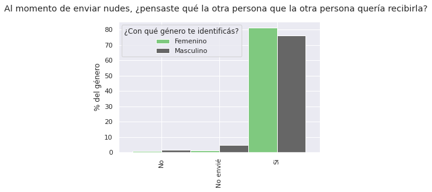 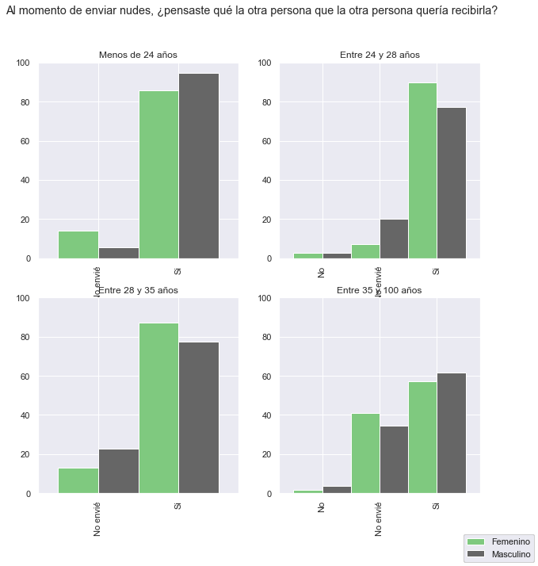Más allá del consentimiento para el intercambio de nudes, también es importante la confianza: saber que la otra persona no va a compartir material íntimo sin nuestro consentimiento.
Quisimos saber con cuánta frecuencia pasaba eso entre las personas que completaron la encuesta. La gran mayoría sostuvo que nunca lo hizo. Entre quienes sí lo hicieron, ocurrió mucho más con varones que con mujeres. Cuando lo desagregamos por edades vimos que, en el caso de los varones, hay una mayor tendencia a medida que son más grandes.
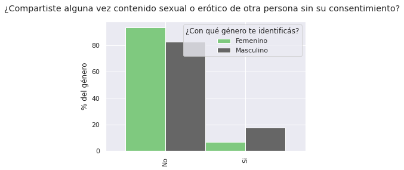 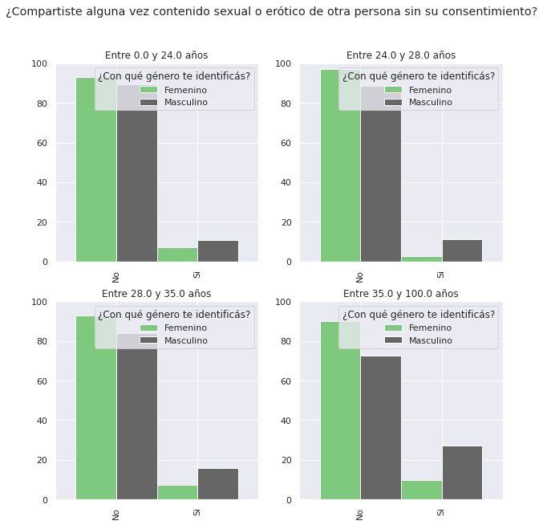Por último, nos interesaba saber a quiénes se le suele enviar material. Entre amigues no parece ser habitual. Y encontramos algo interesante: mientras que para las mujeres, el envío aumenta significativamente con la “estabilidad” de la relación, para los varones se mantiene más o menos en niveles similares. Pensamos que quizás hay cuestiones de temor y riesgo de difusión de material íntimo no consentido que afectan más a las mujeres y que disminuyen cuando se conoce más a la otra persona.
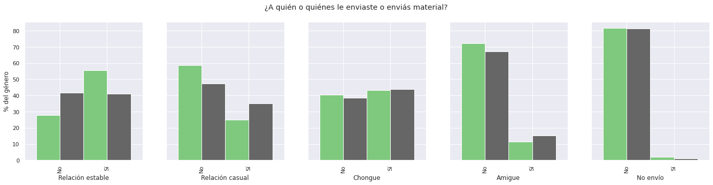🍆 LA P...ANDEMIA QUE NOS PARIÓ
La pandemia nos afectó un montón. Y el sexo cayó en la volteada.
Frente a la necesidad de aislarnos y la imposibilidad de encuentros en vivo y en directo, quisimos saber si el sexting se había incrementado. Lo analizamos por género y por edad.
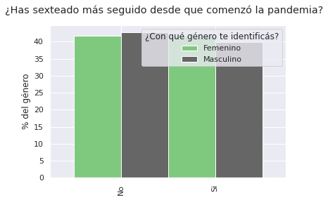 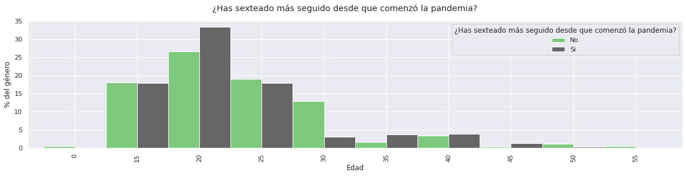🔒 ANTE TODO, LA SEGURIDAD
Acá es donde viene la parte que más nos interesa.
Porque el sexo es divertido, pero la seguridad es fundamental.
Lo primero que descubrimos -WAIT FOR IT- es que la difusión no consentida de material íntimo parece no ser del agrado de quienes compartieron originalmente el material.
Sor Prendente. Inés Perado. Agnes Pected.
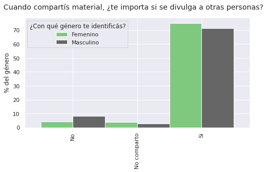En segundo lugar, quisimos saber si las personas habían tenido acceso a información acerca de cómo enviar material de forma segura. De manera muy poco sorprendente, encontramos que mayormente no.
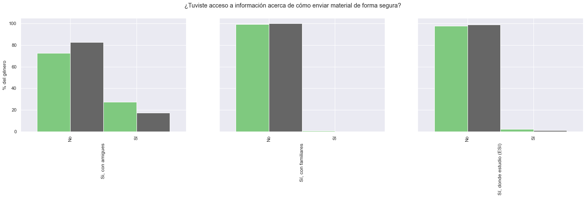También preguntamos si hablaban con alguien al respecto.
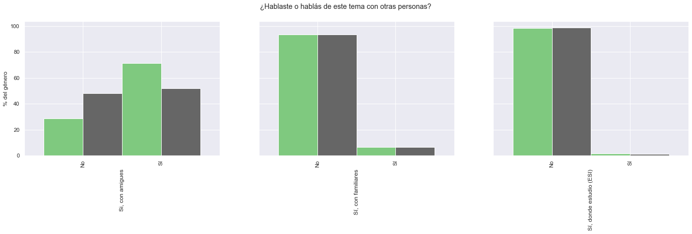Y ahora el momento cúlmine: preguntamos qué modos de protección conocían al momento de enviar material íntimo. El más popular, por lejos, es no mostrar la cara, seguido de evitar que se vean marcas identificatorias como cicatrices, lunares, tatuajes. ¿Los métodos técnicos? De esos, casi ni noticias.
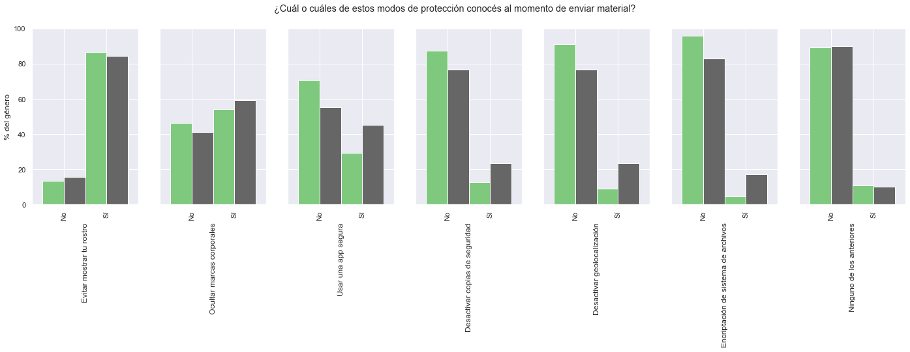De todas formas, como “del dicho al hecho hay mucho trecho”, quisimos ver qué pasaba en la práctica. Así que preguntamos cuál o cuáles de estos modos de protección usaron alguna vez. Y bueno, pasaron cosas. Incluso conociendo las formas de incrementar la seguridad y de disminuir los riesgos de la difusión no consentida de material íntimo, no las ponemos en práctica. Y eso es preocupante.
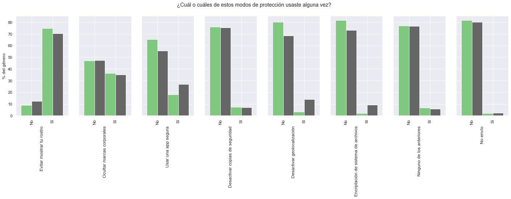También quisimos saber qué plataformas de envío eran las más usadas. Whatsapp, Instagram y Telegram quedaron en el podio. Sigan leyendo porque en la última sección les vamos a contar las características de seguridad de cada una de ellas con un cuadrito que van a querer convertir en imán para la heladera.
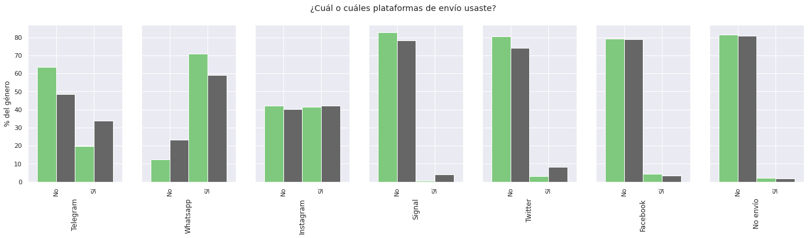🤫 CINCO CONSEJOS PARA MANDAR UNA NUDE (CASI) SEGURA
Sabemos que las nudes se pueden enviar con mayor o menor grado de seguridad, pero 100% segura, así como “uh, qué segura”, no existe.
Así que les dejamos 5 consejos para minimizar riesgos.
-
El consentimiento
El primer paso para mandar una nude es tener consentimiento.
Parece obvio, pero es importante que la persona que lo vaya a recibir quiera hacerlo.
-
El medio
Hay canales más seguros que otros.
Algo muy importante es si tienen encriptación punta a punta. También es importante si elimina metadatos, inhabilita el reenvío de material, avisa si alguien hace una captura de pantalla y permite la autodestrucción de mensajes.
Este cuadrito es oro puro 👇
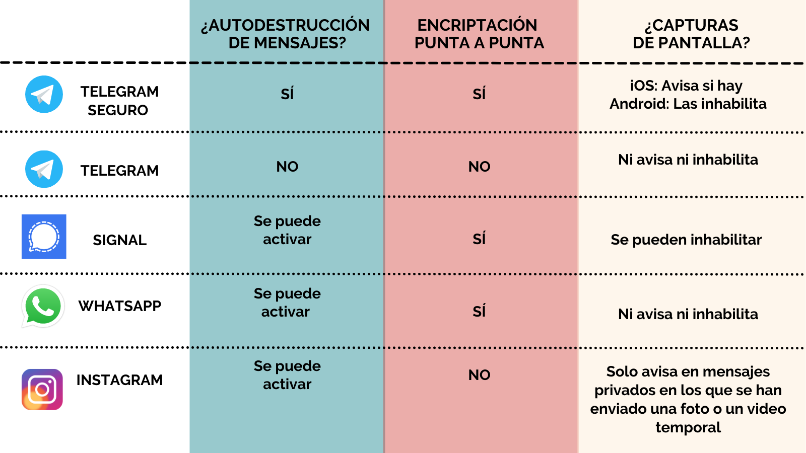 -
La configuración del teléfono
Siempre es conveniente tener una clave de desbloqueo del teléfono o, en su defecto, una forma biométrica de desbloqueo.
Además, para el medio que sea se puede habilitar autenticación de múltiple factor.
-
Deshabilitar copia de seguridad
Las fotos del teléfono, además de guardarse en el teléfono, pueden guardarse por defecto en la 🌈 nube 🌈. Pero la 🌈 nube 🌈 no es una entidad mágica. Es, básicamente, otra computadora.
-
La foto
Para mantener el anonimato es importante esconder rasgos biométricos identificatorios: rostro (obviamente), marcas de nacimiento, cicatrices, tatuajes... Si no es posible o deseable, podés dibujarle encima o blurear esa parte de la foto.
Esto fue todo. POR AHORA.
Y ya saben, más vale foto segura que cien volando (por internet) 😏